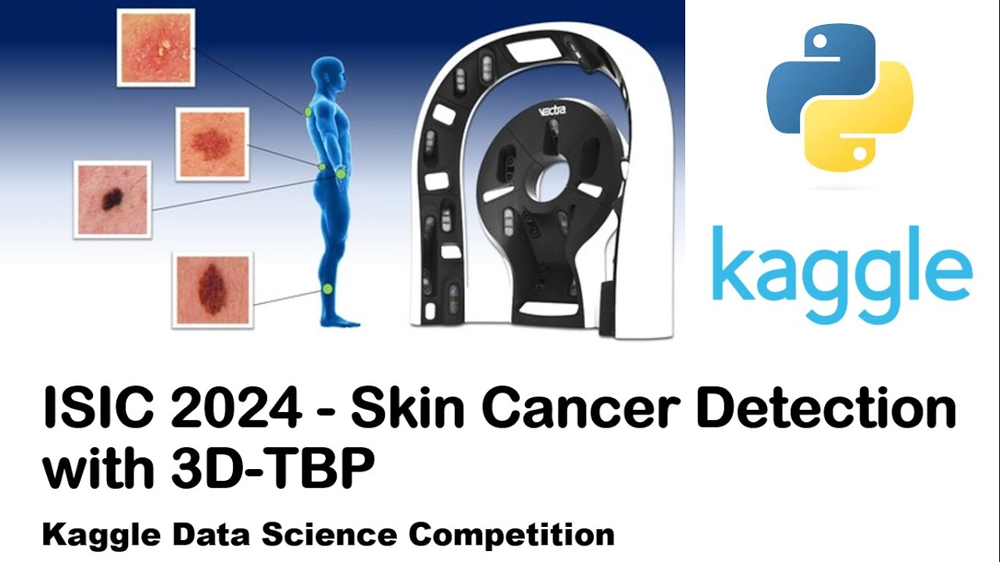
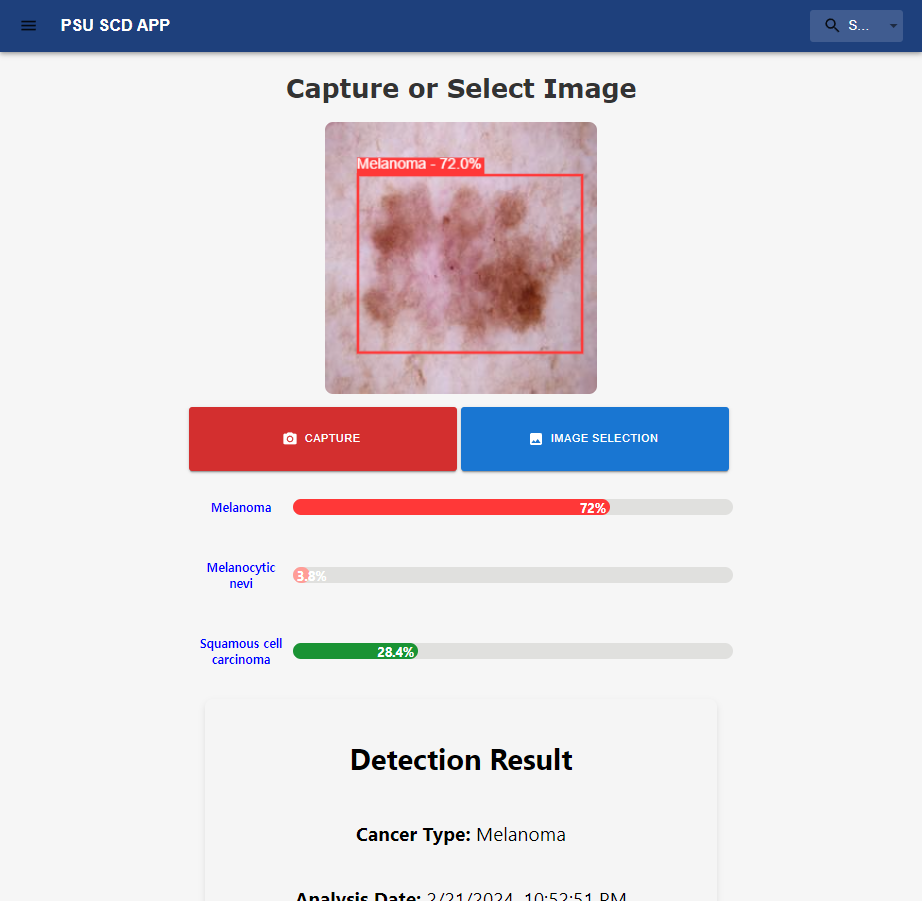
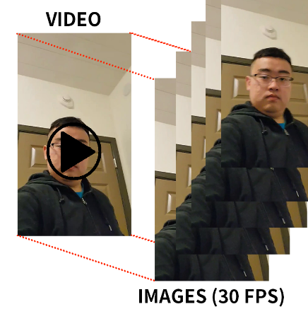
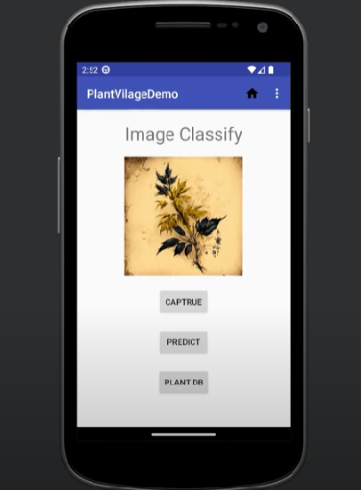

Jinyoon Kim
I completed my bachelor's degree in Computer Science at Penn State University-Harrisburg in 2024. My research interests are in artificial intelligence and computer vision, including Machine Learning, Medical Image Analysis, 3D Computer Vision, Vision and Language, Multimodal Learning, Scientific Computing Applications. I am currently working on improving vision-language models by optimizing the integration of text embeddings and vision features for real-time object detection tasks. This research aims to enhance the architecture to better fuse these modalities, enabling more efficient and effective detection of diverse object categories while maintaining real-time performance. Prior to graduation, I contributed to several research projects related to image recognition for medical image analysis and automated self-supervised learning systems, publishing the results under the guidance of my mentors.
CV|GitHubPublications
-
NEWYOLO-SCSA: Enhanced YOLOv8 with Spatially Coordinated Shuffling Attention Mechanisms for Skin Cancer Detection
Jinyoon Kim, Tianjie Chen, Hien Nguyen, and Md Faisal Kabir. Submitted. In Proceedings of IEEE International Conference on Machine Learning and Applications (ICMLA 2024), Accepted on September 8, 2024. [ paper | code ]
-
NEWAutomated Image Segmentation Using Self-Iterative Training and Self-Supervised Learning with Uncertainty Scores
Jinyoon Kim, Tianjie Chen, and Md Faisal Kabir. In Book of Recent Advances in Deep Learning Applications: New Techniques and Practical Examples, Chapter 1, 2024. [ paper | code | Book Weblink]
-
Automated Data Labeling for Object Detection via Iterative Instance Segmentation
Jinyoon Kim and Md Faisal Kabir. In Proceedings of IEEE International Conference on Machine Learning and Applications (ICMLA 2023), pp. 845-850, 2023. [ paper | poster | code ]
Projects
-

ISIC 2024 Kaggle Competition for Skin Cancer Detection with 3D-TBP (2024)
Jinyoon Kim [ homepage | code ]
- To develop a high-performance model for skin lesion classification in the ISIC 2024 Skin Cancer Detection competition on Kaggle
- Developed a model that utilizes ensemble learning with EfficientNet and other deep learning architectures to achieve high performance
- Created a competitive classification model, currently participating in the competition
-

Capstone Project: Skin Cancer Detection Web Application (2024)
Jinyoon Kim, Tianjie Chen, Hien Nguyen, and Md Faisal Kabir [ slides | project code | web application code ]
- To create a web application for skin cancer detection, making it accessible and user-friendly
- Developed the application using YOLOv8, combined ISIC datasets, and implemented confounding factors removal and interpretability techniques
- Successfully created a PWA-based web application, ensuring wide accessibility and transparent diagnostic processes through visual interpretability
-

Machine Learning Project: Face Recognition Program (2023)
Jinyoon Kim, Aditya Kendre, et al. [ slides | code ]
- To build a face recognition system with high accuracy and feature extraction capabilities
- Developed the system using fine-tuned ResNet and implemented a Top k features algorithm for enhanced feature extraction
- Created a model that can accurately classify the group members of the team through face recognition
-

Plant Village Demo: Machine Learning Classification on Mobile Application (2023)
Jinyoon Kim [ code | video ]
- To create a mobile application for detecting plant diseases using neural networks
- Developed and fine-tuned MobileNet for plant disease detection on mobile devices
- The application runs efficiently and accurately classifies images of plant diseases in a mobile environment
Awards & Honors
- National Ackroyd Healthier Days Scholarship, 2024. Awarded for a research project focused on improving health environments for patients through a skin cancer detection application. This project was conducted in collaboration with the Ackroyd Family Foundation and the Penn State community
- PennState Harrisburg Computer Science Department Undergraduate Student Award, 2023. Recognized by the Penn State Harrisburg Computer Science Department for my participation in the ICMLA 2023 conference, where I presented research on a self-supervised learning algorithm for an automated image segmentation system
News
-
 Pennsylvania State University Capstone Project Conference 2024. May 1, 2024. I attended the Penn State Capstone Project Conference 2024 as a member of the Capstone Project Team. Thanks to Professor Nguyen, Professor Kabir, and my colleague Tianjie Chen
Pennsylvania State University Capstone Project Conference 2024. May 1, 2024. I attended the Penn State Capstone Project Conference 2024 as a member of the Capstone Project Team. Thanks to Professor Nguyen, Professor Kabir, and my colleague Tianjie Chen -
 IEEE International Conference on Machine Learning and Applications (IEEE ICMLA 2023). December 15, 2023. I attended ICMLA 2023 with the poster of my paper for the presentation. Thanks for Dr. Kabir and everyone I met at the conference [ieee website]
IEEE International Conference on Machine Learning and Applications (IEEE ICMLA 2023). December 15, 2023. I attended ICMLA 2023 with the poster of my paper for the presentation. Thanks for Dr. Kabir and everyone I met at the conference [ieee website]